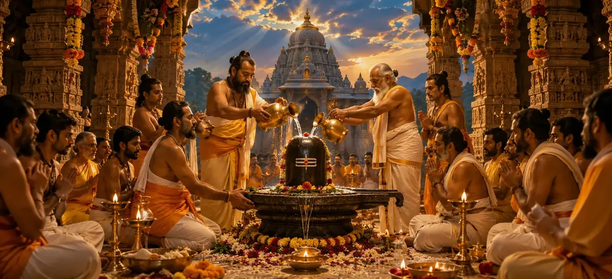

The Installation of Shiva
The seventy-first chapter of the Vayaviya Samhita outlines the sacred rituals, purification rites, and procedural guidelines for establishing and installing the Shiva Linga for perpetual worship and liberation.
Rishi Vayu explains how installing Lord Shiva’s emblem transforms a physical space into a vibrant sanctuary of divine energy and supreme grace.
This chapter provides essential instructions for devotees seeking to enshrine the Supreme Lord.
Chapter 71 Highlights
Sacred Site Selection
Choosing pure locations for establishing the Linga.
Purification Rites
Cleansing the ground and materials with mantras.
Prana Pratishtha
Invoking divine consciousness into the emblem.
Offerings & Worship
Dedicated rituals with flowers, water, and incense.
Merit & Liberation
Gaining supreme spiritual rewards and eternal peace.
Path to Yoga
Setting up the transition to Chapter 72 (The Goal of Yoga).
Core Topics in This Chapter
- 01Selection of the Sacred Site and Preparation→
- 02Purification of the Linga and Materials→
- 03Chanting of Sacred Mantras and Invocations→
- 04The Rite of Prana Pratishtha→
- 05Guidelines for Perpetual Worship and Seva→
- 06Spiritual Fruits and Merits of Installation→
- 07Transition to Chapter 72 (The Goal of Yoga)→
Selection of the Sacred Site and Preparation
Rishi Vayu explains that the installation of a Shiva Linga must begin with selecting a spiritually pure and auspicious location, such as temples, riverbanks, or serene natural groves.
The ground is thoroughly consecrated and cleansed before any physical establishment takes place.
Purification of the Linga and Materials
The Linga, whether carved from stone, gemstone, metal, or fashioned from sacred clay, undergoes elaborate ritual baths using pure water, milk, honey, and herbal infusions.
This ritual purification removes all impurities and prepares the emblem for divinity.
Chanting of Sacred Mantras and Invocations
Priests and devotees chant powerful Vedic mantras, particularly the Rudram and the sacred Panchakshara mantra (Namah Shivaya), invoking Lord Shiva’s presence into the consecrated spot.
Sound vibration aligns the space with cosmic frequencies.
The Rite of Prana Pratishtha
Through specialized ritual procedures known as Prana Pratishtha, the devotee breathes life and divine consciousness into the static form, transforming stone or metal into a living embodiment of Mahadeva.
The deity is formally welcomed and seated upon the pedestal.
Guidelines for Perpetual Worship and Seva
The text prescribes regular daily worship, offering bilva leaves, sacred water, sandalwood paste, and lamps, ensuring that the installed shrine remains a perpetual source of spiritual upliftment.
Constant devotion nurtures the bond between devotee and Lord.
Spiritual Fruits and Merits of Installation
Rishi Vayu emphasizes that anyone who installs a Shiva Linga acquires immense spiritual merit, cleanses generations of ancestors, and attains ultimate liberation in Shiva's abode.
The act yields boundless blessings in both material and spiritual realms.
Transition to Chapter 72 (The Goal of Yoga)
Having established the rituals of Linga installation in Chapter 71, Rishi Vayu prepares to narrate Chapter 72, 'The Goal of Yoga'.
This next chapter will explore the profound meditative practices and ultimate spiritual realization of yoga.
Key Teachings of Chapter 71
Sacred Ground
Proper site selection for shrines.
Ritual Cleansing
Purifying materials with sacred baths.
Mantra Power
Invocations aligning with cosmic sound.
Prana Infusion
Awakening divine consciousness in the Linga.
Perpetual Grace
Sustaining daily worship and seva.
Yoga Prelude
Preparing for Chapter 72 meditative insights.
Spiritual Reflection
Installing a Shiva Linga is not merely a physical act of construction, but an act of anchoring the boundless divine consciousness into our tangible reality, creating an everlasting beacon of peace.
Living the Message of Chapter 71
Maintain purity of body, mind, and intent when engaging in worship.
Honor sacred shrines as living centers of divine grace and spiritual refuge.
Dedicate regular time to heartfelt prayer and offerings to Mahadeva.
Key Spiritual Concepts
The sacred procedural guidelines for establishing a Shiva Linga.
The ritual consecration and purification of the sacred land.
The metaphysical infusion of divine life into physical icons.
Worship centered around the five-syllabled mantra of Shiva.
The pious duty of maintaining continuous daily worship.
The accumulation of supreme spiritual merit through sacred installation.
Chapter Summary
Vayaviya Samhita Chapter 71 outlines the sacred rites, purification procedures, mantras, and spiritual merits of installing the Shiva Linga, preparing the spiritual seeker for Chapter 72, 'The Goal of Yoga'.
Frequently Asked Questions
1. What is the primary focus of Vayaviya Samhita Chapter 71?
Chapter 71 details the sacred procedures, rituals, and spiritual significance of installing the Shiva Linga for eternal worship and liberation.
2. Why is the installation of Shiva Linga considered so important?
Installing a Shiva Linga brings supreme spiritual merit, destroys sins, and establishes a perpetual conduit for divine grace and cosmic harmony.
3. Who expounds these sacred installation rites?
Rishi Vayu details these profound ritualistic procedures and mantras to the assembled sages.
4. What is the next chapter for navigation after Chapter 71?
The next chapter for navigation is titled 'The Goal of Yoga'.
“When the Shiva Linga is consecrated with devotion and mantra, the mortal shrine becomes an infinite portal of grace connecting earth and heaven.”
Continue Through Vayaviya Samhita
Chapter 71 concludes The Installation of Shiva. Continue to The Goal of Yoga.